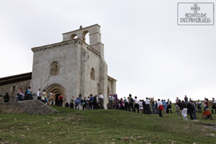

Antiguamente la fiesta de San Pantaleón se celebraba el miércoles siguiente a la Pascua de Pentecostés, posteriormente debido a la despoblación rural, pasó a celebrarse el día de Pentecostés, y en la actualidad se celebra el último domingo de Julio, por la cercanía al día de San Pantaleón, 27 de ese mes.
- 
-
Nuestros mayores cuentan, que antaño acudían a esta Romería hasta 49 pueblos en peregrinación Era obligatorio acudir una persona de cada familia, bajo pago de una multa si no se cumplía. Llegaban en sus caballos, y otros caminando a través de los campos. Toda la jornada festiva transcurría en la Peña, junto a la Ermita, allí se comía, se jugaba a bolos, se bailaba; acudían una caramelera, que vendía caramelos y almendras garrapiñadas y tres taberneros con sus pellejos y garrafones de vino para que nadie pasara sed y no faltara la alegría.
{kind=link}
Esta tradición se ha ido perdiendo y en los últimos años ya no asistía ningún pueblo como tal, pero desde el año 2008 la Asociación "Amigos de San Pantaleón" mediante la invitación expresa que hacemos a cada pueblo del Valle de Losa y a los pueblos que sabemos con certeza que acudían antiguamente, hemos conseguido que los pueblos vuelvan a estar presentes en la Ermita el día de la Fiesta. Para agradecerles la buena respuesta que nos han dado, tenemos la deferencia de colocar unas cintas, dentro de la Ermita, con el nombre de todos los pueblos invitados.